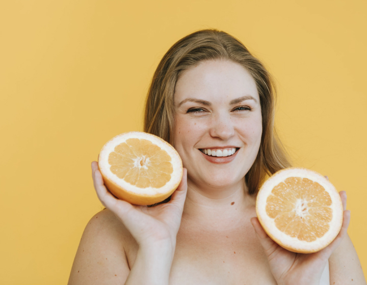

21 апреля 2018
«Мобильный потребитель всегда торопится». В Новосибирске обсудили тенденции E-commerce
Obuv Rossii Conference и клуб «Сибирь» E-commerce провели 4-ю Сибирскую конференцию «Эффективный интернет-маркетинг: как получить результат».
Подробнее
21 апреля 2018
В Карелии организована горячая линия по вопросам медицины
В республике Карелия организована работа круглосуточной «горячей линии» учреждений здравоохранения. …8 800 201 06 57 - единый многоканальный телефонный номер.
Подробнее
21 апреля 2018
В Нальчике собрались пластические хирурги
«Красота и здоровье – понятия неделимые, и сейчас в современном обществе это направление медицины получает все большую актуальность.
Подробнее

21 апреля 2018
Традиционная и нетрадиционная медицина. Методы нетрадиционной медицины
Испокон веков человечество ищет способы быстрого излечения от болезней. И на сегодняшний день существуют три основных группы используемых методов: современные, традиционные и нетрадиционные
Подробнее
//= template/pager.html
//= template/subscribe.html